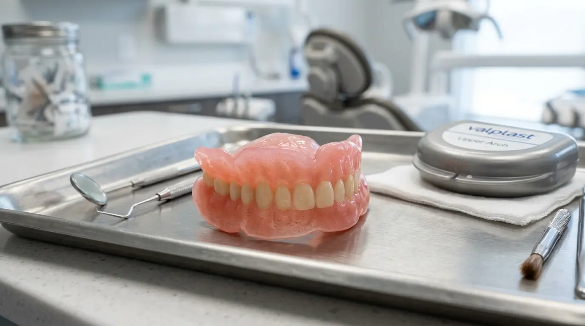

שיניים תותבות מסיליקון (ואלפלסט): פתרון אסתטי ונוח
השורה התחתונה:
- תותבות גמישות (הידועות כסיליקון או ואלפלסט) הן חלופה אסתטית לתותבות חלקיות מסורתיות.
- הן ללא ווי מתכת בולטים, מה שמקנה חיוך טבעי לחלוטין.
- הן נוחות יותר בפה, אך אינן מתאימות כתותבות שלמות אלא רק במקרים של חוסר שיניים חלקי.
אנשים רבים שזקוקים לשיניים תותבות חלקיות חוששים מהמראה של ווי המתכת שאוחזים בשיניים הטבעיות. כאן נכנסות לתמונה שיניים תותבות מסיליקון (המוכרות גם כואלפלסט Valplast). תותבות אלו עשויות מחומר ניילון תרמופלסטי גמיש שמאפשר פתרון אסתטי, קל ונוח בהרבה.
מהן היתרונות של תותבות סיליקון?
- אסתטיקה מושלמת: הוויים שאוחזים בשיניים הטבעיות עשויים גם הם מאותו חומר גמיש וורוד המשתלב עם צבע החניכיים, בניגוד לווי מתכת כסופים שבולטים לעין כשאנחנו מחייכים.
- נוחות: החומר הגמיש דק וקל יותר מאקריל רגיל, ומסתגל בקלות רבה יותר למבנה הפה והחניכיים. זה מפחית משמעותית את הסיכוי לשפשופים.
- עמידות: בניגוד לתותבות אקריליות שעלולות להישבר אם הן נופלות על הרצפה, תותבות הסיליקון עמידות מאוד לשברים בזכות הגמישות שלהן.
האם יש חסרונות?
למרות יתרונותיהן הברורים, תותבות גמישות אינן הפתרון לכולם. ראשית, הן משמשות כתותבות חלקיות בלבד. לא ניתן לבנות תותבת שלמה (כשחסרות כל השיניים בלסת) מסיליקון, מכיוון שתותבת שלמה זקוקה לבסיס קשיח כדי לספק תמיכה ויציבות ללעיסה. שנית, קשה יותר (ולפעמים בלתי אפשרי) להוסיף שיניים חדשות לתותבת סיליקון אם נעקרת שן טבעית נוספת בעתיד, בניגוד לתותבת אקריל שניתן לתקן ולשנות בקלות.
התאמה בבית: האם זה אפשרי?
בהחלט! אנו מבצעים מדידות והתאמה של שיניים תותבות גמישות בביתו של המטופל. רופא שיניים יגיע אליכם, יאבחן את מצב הפה, יסביר אם אתם מתאימים לתותבת סיליקון וייקח מידות מדויקות, הכל בנוחות של הסלון שלכם.
מעוניינים בשיניים תותבות ללא מתכת?
אנו מתמחים בהתאמת שיניים תותבות גמישות ואסתטיות במיוחד, עד אליכם הביתה.
צרו קשר לייעוץ והתאמה